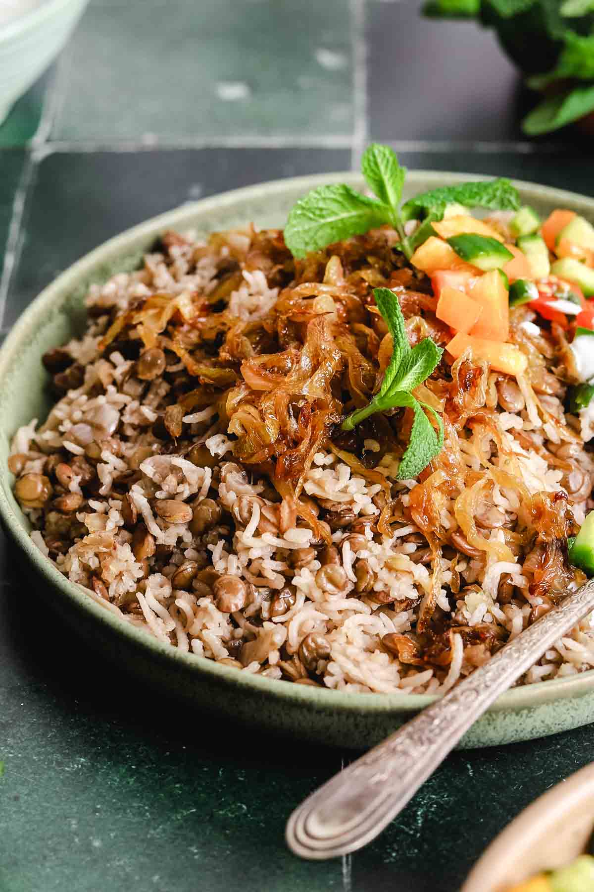

One Pot Mujadara (Middle Eastern Lentils and Rice)

Description
Mujadara is a humble but extremely popular vegan middle eastern dish made with lentils, rice, and onions. Although the dish is simple, it's packed full of flavour and the onions are what make it magical! This authentic Arabic mujadara recipe has been tested to perfection!
Ingredients
For the Lentils and Rice:
- 1 onion, finely chopped
- 4 tablespoons olive oil, extra virgin
- 2 teaspoons ground cumin
- 2.25 teaspoons salt
- ½ teaspoon black pepper
- 8 cups water or broth, vegetable or chicken
- 1 bouillon cube, vegetable or chicken
- 2 cups brown or green lentils
- 2 cups long-grain basmati rice
For the Caramelized Onions:
- 4 onions
- ½ cup olive oil, extra virgin
- 1 teaspoon salt
Steps
For the Caramelized Onions:
- Slice the onions thinly using a sharp knife or a mandolin.
- Add the olive oil to a large sauté pan on medium heat.
- Add the onions and salt, stir, and cover. Allow the onions to wilt for 10 minutes.
Note: For caramelized onions, not crispy onions, see notes below the recipe.
- Remove the cover and stir every 1-2 minutes until deeply golden. The process should take roughly 30 minutes from start to finish.
- Remove the onions using a slotted spoon and set aside on paper towels. Do not discard the remaining olive oil in the pan.
For the Rice and Lentils:
- While the onions are caramelizing, start on the lentils.
- In a medium-sized non-stick pot, heat up the olive oil over medium heat. Add the chopped onions and cook until softened, roughly 4-5 minutes.
- Add the lentils along with the bouillon cube and all the water or broth. Bring the pot to a rolling boil.
- Cover and allow the lentils to simmer until softened and almost cooked, for 10 minutes.
- Meanwhile, wash and rinse the rice several times, ensuring you drain it completely.
- After 10 minutes, add the rice to the pot, along with the salt, pepper, and cumin. Bring the pot to a rolling boil.
- Reduce the heat to low, cover with a tight-fitting lid, and cook for 20 minutes. Place a paper towel underneath the lid to help ensure the rice cooks well (optional).
- After 20 minutes, turn off the heat and gently fluff the rice. Cover and let stand for 10 minutes.
Serving:
- Serve the mujadara by plating it on a platter and adding the caramelized onions on top.
- Serve with salad and yogurt.
Notes:
- Use brown or green lentils for this recipe, not red split lentils
- If you want crispy onions instead of soft caramelized onions, follow the same process but use medium-high heat and stir more frequently until crispy and golden
- Use only long-grain basmati rice for this recipe